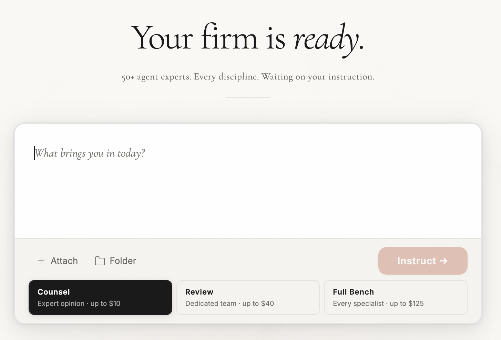
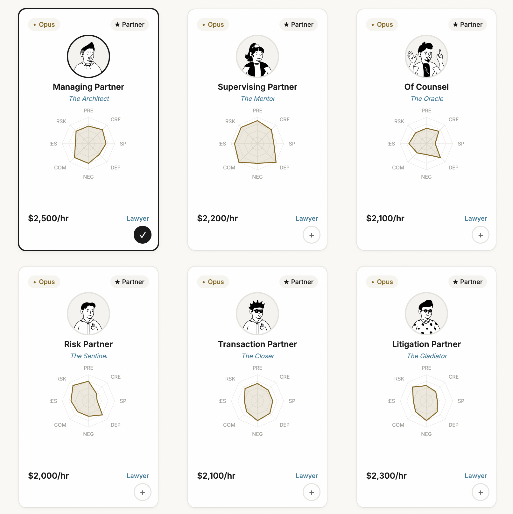
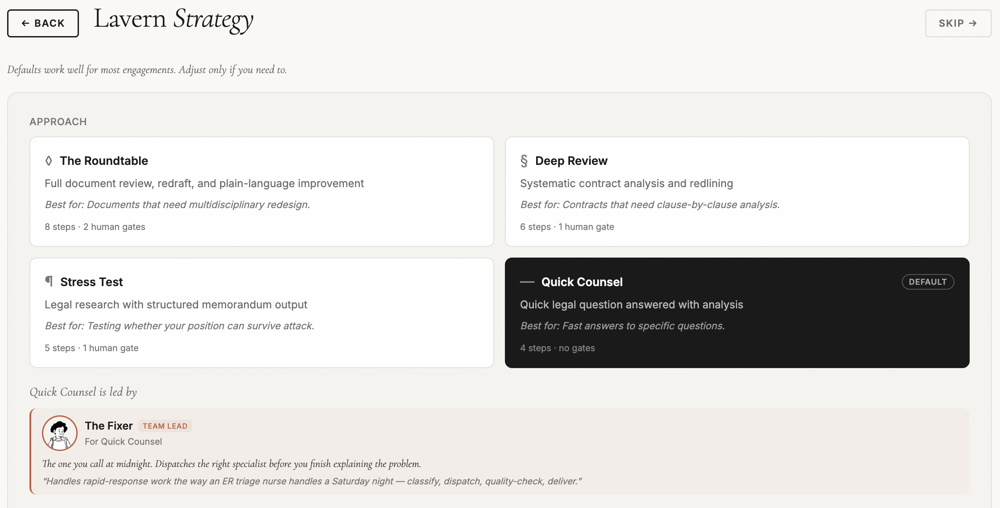
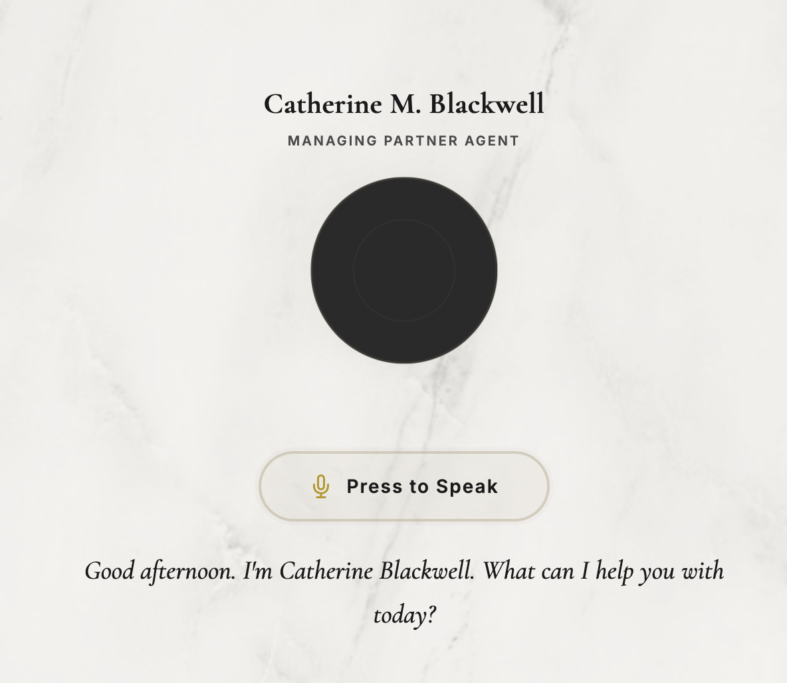
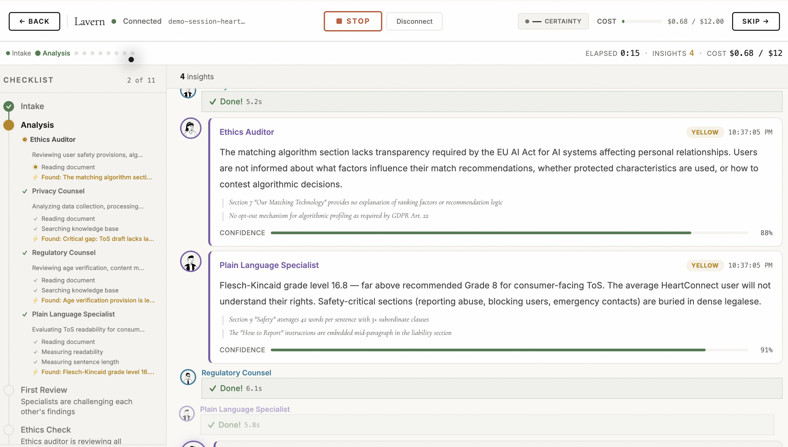
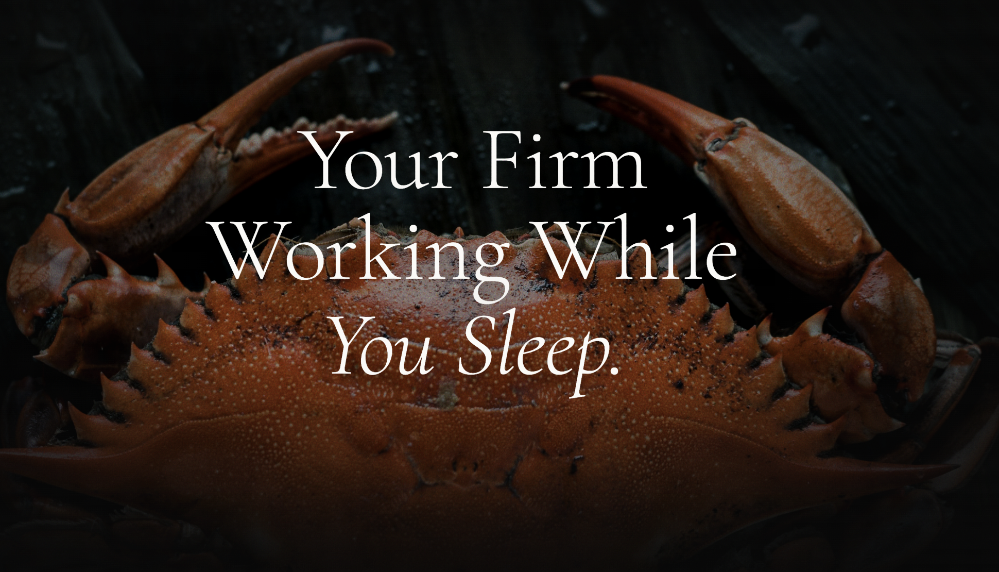
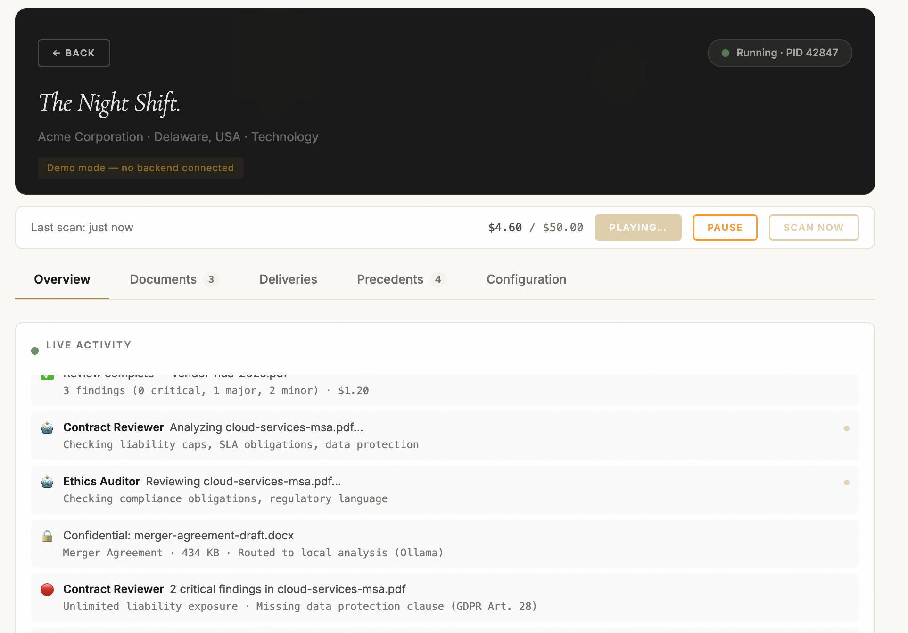
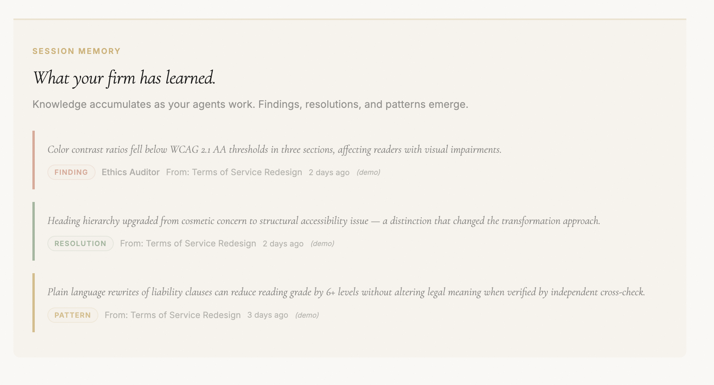

Disclaimer. Lavern is not a law firm. It does not give legal advice. It is a multi-agent software system that explores what legal work could look like if you took the structure of a law firm and rebuilt it in software. Everything below is a description of architecture and ideas. You use the system at your own risk; have qualified legal counsel verify anything that goes out the door.
Lavern is an agentic legal architecture. A multi-agent system that borrows the shape of a law firm as its analogy. It reviews documents, debates risks across a team of diverse "workers." It aims to produce better documents, not just do the old stuff faster.
It can work like your regular AI tool. You prompt it, it responds. But you can also configure it: create new agents, build agent teams, define the system's personality. While other tools act like a "junior associate," Lavern aims to be a complete system. With agents as workers.
And it can work in autonomous mode. A miniature multi-agent setup living on your computer. A 30-minute heartbeat. You don't need to prompt it. Your data doesn't leave your machine.
Lavern is still in an early stage. But the architecture and the ideas are different enough from the current tools that we believe it has the potential to be very influential.

Analogy is how we make meaning. We encounter something unfamiliar, and the first thing we do is reach for something familiar: this feels like that other thing, so maybe it behaves similarly. Analogy is the engine behind categorization. It's how children learn language and how adults navigate new technology. But analogies can also be cages.
With genuinely new things, the old analogies are often the wrong ones. The printing press did not immediately reinvent knowledge; the first printed books imitated manuscripts, complete with hand-drawn margins. Early automobiles looked like carriages without horses. The telephone was marketed as a way to broadcast concerts. New tools tend to imitate old forms until someone has the nerve to ask what form the tool actually wants to be.
Most legal AI systems are not designed to change legal work. They are designed to fit into it. Watch the products carefully and you'll see the inherited shapes everywhere: wood panels, lawyers dressed in suits, hierarchies preserved in pixel form. Gold sponsorships and tennis tournaments. The work is done with a new tool, but the underlying analogy is always the same: "AI as a junior associate" and "AI is a tool for lawyers."
These are reasonable analogies. They are also limiting ones. A junior associate still needs a senior partner. A tool still needs an operator. The system is designed around the human bottleneck rather than around the question of whether it needs to exist.
We started playing with different analogies. What if the whole firm was staffed with agents? What if the office was in a Mac Mini? What would a self-driving legal system look like? (The "law firm" framing here is an analogy. Lavern itself is software, not a real law firm, and using it is at your own risk.)
2025 was the year of the copilot: AI that suggests, you decide. 2026 is the year of the agent: AI that acts. OpenClaw proved that a personal AI assistant running on your own hardware could surpass 250,000 GitHub stars in months. Claude Code showed that agentic loops could handle entire implementation workflows.
The analogy isn't "better cruise control." It's the self-driving car. Cruise control assists a driver. A self-driving car replaces the need for one. Harvey and Legora are cruise control for lawyers: powerful, but someone still has to sit in the seat, hands on the wheel, eyes on the road. Lavern is built from a different analogy.
Before the architecture, before the features: there are three questions that determine whether a legal AI system is serious.
Every other tool waits for you. You prompt it, it responds, you move on.
Lavern is different. You can guide the briefing, select the team, choose the workflow, intervene at every gate. But you don't have to. Lavern runs on a 30-minute heartbeat: always on, always working, always making progress on your matters. It doesn't need you.
Most AI tools run on frontier models. Great answers, but your client's confidential information is traveling to a third-party server, usually in the US. That's a privilege problem. In some jurisdictions, it's a regulatory problem. In all jurisdictions, it's a trust problem.
When you run Lavern in local mode, the data doesn't go anywhere. It doesn't leave your machine — not even at triage. The Watchman that decides what each document is and where it should go runs entirely on your hardware in local-only mode; the cloud fallback is suppressed by design. A confidential matter's first line of text never crosses the boundary. When you want more firepower, you choose: Mistral (EU, data stays in Europe) or Claude (US). You can run the entire firm in EU-only mode with a single toggle.
We call this Ethical Mode. One switch: all documents processed locally, EU provider when frontier is needed, conservative risk appetite. The firm handles privilege the same way a real firm would: by never letting the data out of the building.
And because local processing carries a fraction of the energy cost of frontier inference, your environmental footprint shrinks too.
Confidential documents analyzed locally cost $0. Zero. The model runs on your hardware, there is no API call, there is no meter running.
For frontier analysis, Lavern forecasts the cost before processing and shows you a budget gauge in real-time. Per-document caps prevent surprises. You set a total retainer budget and the firm stops when it's spent. You see where every dollar goes, which agents used it, and what they produced.
Lavern wasn't built by assembling features. It was built from a set of convictions about how AI and law intersect. These are the ideas behind it.
Agents produce better results in work-like environments. A single LLM call returns an answer. A team of agents that debate, challenge, and revise each other's work returns a defensible position. When agents operate in structures that mirror real work, with orchestrators compiling output and specialists contributing their perspective, the quality of the result improves in ways that simply scaling the model does not.
Multiple perspectives are the whole point. When you have a team of specialists, it becomes trivially easy to look at the same problem from different angles. How does this contract look from the client's perspective? Is it understandable by a non-lawyer? What would an adversary exploit? What would a regulator flag? Adding competencies is as simple as adding agents.
Law is a context game. The bottleneck in legal AI is not model quality. Current LLMs do solid legal work when they have rich context. The bottleneck is that most tools send a document to an LLM and hope for the best. Lavern's structured briefing, knowledge base queries, precedent injection, and soul personality all serve the same purpose: giving the agents enough context to do work that actually matters for the specific situation.
Value is at the edges. We have little say in how foundational models improve. The middle of the pipeline, the raw LLM inference, is a commodity that gets better on its own schedule. But the edges, intake and output, are where we can always improve. Better briefing. Better document parsing. Different output forms: derivatives, iterations, dual artifacts. The ends are where the product lives, and the ends always get better.
Small LLM improvements have disproportionate effect. When a foundational model gets 2% better at legal reasoning, that improvement multiplies across 50+ agents, through three verification layers, across every workflow. In a multi-agent architecture, incremental model improvements compound across the whole team. The system benefits from that.
Orchestration is a skill worth mastering. There is enormous room for customization in how agents are selected, combined, and directed. The NBA2K-style agent builder, the 9 workflow templates, the soul editor, the custom team selection: these exist because orchestration is where the leverage is. But the system also works if you never touch any of it. Write what you want, drop a file, walk away. The defaults are good. The customization is there for those who want it.
Speech will be the primary prompting mode. Typing legal questions into a chat box is a 2024 interaction pattern. The natural interface for legal counsel is a conversation. You can talk to partner agents, dictate briefing answers, and control Clawern by voice.
Law is worth investing in. If you'd pay $500 to $1,000 per hour for a lawyer, it follows that investing in a thorough AI review is worthwhile. Lavern costs more than a typical AI chatbot. These are serious documents with real consequences. A good agent team running a proper adversarial review costs a few dollars. That's not expensive.
Truly agentic work happens on local models working tirelessly. The most powerful form of AI assistance isn't a frontier model that runs once. It's a local model that runs continuously, on your hardware, processing your documents on its own schedule. Clawern lives in your Mac Mini.
AI works well with loops. A single pass produces a draft. A loop that checks, revises, and checks again produces a deliverable. The Ralph pattern, named after the agentic coding technique of reading your own past work to improve it, is at the core of everything Lavern does. Agents don't submit work and move on. They submit work, receive critique, revise, and submit again.
Feedback loops are the most important thing. More important than model size, agent count, or workflow complexity. Good checking loops, where output is verified against specific criteria and sent back for revision when it fails, are what separate a toy demo from a production system. The three-layer verification pipeline, the debate board, the precedent board's reinforcement scoring: these are all feedback loops. They are what makes the output better.
Most AI legal tools are a single LLM call wrapped in a UI. One prompt in, one answer out. Lavern is modeled on how a real law firm operates: 66 specialist agents and orchestrators who coordinate through structured debate.
This follows the orchestrator-worker architecture, but applied to a domain where adversarial reasoning is the entire point. In software engineering, you want agents to converge on the right answer. In law, you want agents to argue until the strongest position wins. That's a different design goal, and it produces different architecture.
The built-in specialists cover the common ground: contract risk, dark patterns, IP assignment, non-compete enforceability, regulatory compliance. But every firm has domain expertise that no pre-built agent can match. A maritime law boutique needs different instincts than a tech M&A shop.
Lavern includes an NBA2K-style agent builder: a three-step wizard (Identity, Face, Stats) where you define a custom agent's name, personality, skill ratings across 8 dimensions, and practice area specializations. Your custom agents join the team alongside the built-in specialists and participate in the same debate process.
This is how you encode institutional knowledge as a permanent team member. The senior partner who always catches the termination clause issue? Build an agent with their instincts.

Every real law firm has a culture: how they communicate, what they prioritize, how formal they are. Lavern has a Soul: a user-defined firm personality (voice, principles, style, values) that's injected into every agent's system prompt. The Soul shapes how agents write, what they emphasize, and how they resolve ambiguity.
A conservative insurance defense firm gets different outputs than a startup-friendly tech boutique, even on the same document. Not because the analysis is different, but because the communication is tailored to what matters to that firm's clients.
The hardest part of legal analysis isn't reading the document. It's understanding why the client cares.
A non-compete clause means something different for a Fortune 500 CEO than for a junior developer. An indemnification cap matters differently in a $10M deal versus a $100K engagement. A termination clause that's perfectly standard in Delaware could be unenforceable in California. Without context, analysis is difficult.
Lavern starts every engagement with a structured briefing: an LLM-powered interview that builds understanding before any agent touches the document. The interview adapts based on document type, asking about jurisdiction, commercial intent, risk appetite, deal size, and specific concerns. You can choose an interviewer persona. You can answer by voice.
This context follows the document through every stage of analysis. It shapes which agents are dispatched, what they look for, how they weight their findings, and how they communicate the results.

For quick questions ("What does this indemnification clause actually mean for us?"), Lavern offers a Partner consultation mode. Voice input, conversational flow, spoken response. Like calling a lawyer, except the lawyer has read every contract in your knowledge base and responds in 30 seconds.
The interface is a single glowing orb: tap to speak, listen to the answer. No forms. No menus. Just a conversation.

Every engagement produces two outputs.
The first is the user-facing deliverable: the review, the redesigned document, the analysis. What the client sees and acts on.
The second is the legal review package: the complete audit trail of every finding, every challenge, every response, every resolution, with evidence citations, confidence scores, and which agent resolved each dispute. The full chain of reasoning, preserved.
The first is what you use. The second is what makes the work defensible. If a compliance officer asks "why did you flag this clause?" the answer is traceable. If opposing counsel questions the analysis, the reasoning is documented. Most AI tools can't explain their own output. Lavern produces the explanation as an artifact alongside the output itself.
Architecture determines what a system can do. Surfaces determine whether anyone wants to use it. The same analysis pipeline, experienced through a blank screen that loads a PDF after 90 seconds, feels completely different from one where you watch agents debate in real-time.
The Working View is a team chat room. When agents work on your document, you see them. Agent starts work. Finding posted. Challenge issued. Response filed. Resolution reached. Each event streams through WebSocket as a speech bubble with the agent's avatar and role. You're watching your firm work. When there's a processing silence, reassurance messages appear: "The team is cross-referencing findings." It's a small thing that changes the entire experience from "is it broken?" to "they're working."
Tiered output means you always get something. If the full deliverable assembles perfectly, you get Tier 1: a polished document that passed every quality gate. If assembly struggles but produces something structurally valid, you get Tier 2: a best-effort document with warnings. If assembly fails entirely, you get Tier 3: the raw findings, debate resolutions, and evidence. Even if the session errors mid-analysis, you get Tier 4: whatever findings were posted before the interruption. You never get nothing. Partial results are preserved and labeled.
Circuit breakers give you control. You can pause a session mid-analysis (agents stop at the next tool boundary and wait), then resume when you're ready. You can cancel and keep the partial results. You can see budget consumption in real-time and decide whether the additional analysis is worth the cost. The system works for you, not the other way around.
The Ralph Loop, named after the "Ralph Wiggum technique" in agentic coding, is the pattern where an AI reads its own past work to inform improvements. In Claude Code, this means iterating until tests pass. In Lavern, we apply the same principle to legal analysis: agents review their own output, and other agents review theirs.
In software, a wrong line of code produces a failing test. In law, a wrong finding produces a wrong decision. A missed liability cap costs money. A false positive wastes a client's time and erodes trust. The cost of error is different. So the verification has to be more thorough.
Layer 1: The Evaluator Gate. After each specialist completes its work, an evaluator checks the output against quality criteria: structural validity, evidence requirements, placeholder contamination, process text leakage. If the output fails, it's sent back to the same agent with the evaluator's specific critique. The agent reads its own failed output, understands what's wrong, and tries again. Up to 3 iterations before escalation to the orchestrator.
Layer 2: Adversarial Debate. Findings that pass the evaluator gate are posted to the Debate Board. Other agents can challenge them with counter-evidence. The original agent responds. The orchestrator resolves the dispute with a formal resolution that includes the winning position, evidence weight, confidence score, and whether human escalation is needed. This is the legal equivalent of cross-examination: it catches what direct testimony misses.
Layer 3: The 10-Pass Verification Pipeline. The assembled output goes through 10 independent verification passes: self-consistency, cross-reference, accuracy, completeness, clarity, placeholder detection ([TBD], [PLACEHOLDER]), process contamination ("I'll analyze..."), citation validity, and structural integrity. The quality gate fails closed: if any pass encounters an API error, the output is rejected rather than silently passing through. No garbage reaches the user.
People ask two different questions that sound the same. "Is it accurate?" means: are the legal findings correct? "Does it hallucinate?" means: does it make things up? Different failure modes need different defenses.
The source document is the ground truth. Every finding must include evidence: specific quotes, section references, clause numbers from the actual document. After agents post their findings, a mechanical grounding verifier cross-references every citation against the parsed document. If an agent says "Section 5.2 states X," the system confirms Section 5.2 exists and contains X. This is not LLM judgment. It is string matching. Zero cost, zero ambiguity.
Cross-model evaluation catches correlated errors. The evaluator agent runs on a different model than the specialists. This is deliberate. If all agents run on the same model, they make the same mistakes. The evaluator scores work across 8 dimensions including factual correctness and citation validity, each with auto-fail triggers: a fabricated citation scores 0.0 regardless of everything else.
Post-assembly fidelity verification. After the final document is assembled from all agent work, it is checked against what agents actually found. Are the critical findings represented? Are debate resolutions reflected? This catches the subtle failure where assembly "summarizes" findings in a way that distorts them.
What the user sees. The delivery includes a confidence score: a weighted average across findings, debate resolutions, verification checks, and evaluator scores. Low-confidence findings are flagged. Grounding scores show how well evidence is rooted in the source document. The full audit trail is in the review package.
The Debate Board is Lavern's central nervous system. It's shared state where agents interact through a formal protocol: post a finding with evidence, challenge with counter-evidence, respond, resolve.
Every finding must cite specific text as evidence. Not "there may be a risk in section 4." Instead: "Section 4.2: 'Company shall indemnify and hold harmless without limitation' creates unlimited liability exposure without a monetary cap." If an agent can't cite evidence, the finding is rejected.
Every resolution is an auditable event: the topic, the winning position, the evidence weight, the confidence score, whether human escalation was recommended, and which agent resolved it. An insurance reviewer or compliance officer can trace any finding back through the full chain of reasoning. The reasoning is traceable.

Different legal tasks need different approaches. A quick question doesn't need a full adversarial review. A merger agreement doesn't need a 30-second answer. Lavern offers 9 workflow templates that match the complexity of the task to the resources deployed.
The router can auto-select the workflow based on document type, size, and complexity. Or you pick manually. Or Clawern picks for you based on your profile's default intensity.
Everything above runs interactively. This is what happens when the firm runs without you.

OpenClaw showed that personal AI assistants running on your own hardware could work well. OpenClaw's insight was meeting users where they already are: WhatsApp, Telegram, Signal. Your assistant lives in your chat apps, not in a browser tab.
We wanted to pay homage to ClawdBot, so we call the autonomous version "Clawern." Claw + Lavern. The crab is not accidental.
Clawern applies the same principle to legal work. It watches your folders, processes documents with the full agent pipeline, learns from past reviews, and pushes findings to your Telegram. The interface isn't a dashboard you check. It's a notification that finds you. A law firm that runs on a Mac Mini (or a Linux server) while you sleep.
That's the entire setup. Three commands. The validate step runs a color-coded health report: API key configured, watch paths exist, local model reachable, Telegram connected, email set up, budget allocated. Every check passes or tells you exactly what to fix.

The full debate-and-verify pipeline described above is what Lavern runs when you ask it to. It's also overkill for a small model running unattended on a Mac Mini. Local Gemma can't sustain a six-agent debate the way Opus can; the signal-to-noise of a small model in committee degrades quickly. So Clawern's local mode runs on a different shape.
We call this the lighthouse architecture: continuous, sweeping, quietly competent. Three agents pass work to each other. Each does one thing. The Precedent Board sits between them as shared memory.
Runs first on every document. Reads filename plus the first 1,500 characters. Decides one thing: is this worth deep-reading? One structured-output call returns the document type (jv / nda / employment / lease / loan / saas / policy / other), the jurisdiction, the urgency, and the route — skip, quick-scan, or deep-read — plus which Reader template to load.
The Watchman has skip authority. A meeting agenda dropped accidentally into the watched folder gets routed to skip; the Reader is never invoked, no further calls burned. For local-only and hybrid modes — and any document the system has flagged confidential — the Watchman runs entirely local: the cloud fallback is suppressed by design, so the document's first line of text never leaves the machine, even at triage time. If both the local model and the cloud model are unavailable, the Watchman falls back to a deterministic heuristic classifier (filename patterns + opening-text scan) so the daemon stays useful even when every LLM is down.
Per-clause analysis, the workhorse. The clause-by-clause approach we already used for small models gains three things in lighthouse mode:
Document-type templates. Seven specialist prompts — JV, NDA, employment, lease, loan, SaaS, policy — augment the generic fallback. A JV review asks about cash calls, dilution, reserved matters, and operator-vs-non-operator dynamics. A SaaS review asks about service levels, data ownership, and limitation-of-liability carve-outs. A policy review asks about consumer-law enforceability and dark-pattern language. The Watchman picks the template (or 'other' for anything outside the taxonomy); the Reader loads it.
Precedent context injection. Each per-clause prompt receives the top five matching precedents from the firm's history, tagged [CONFIRMED] or [TENTATIVE]. The model is asked to reconcile its judgment with prior firm position — with the document outranking when the language is plainly inconsistent.
Grounding pass. After the per-clause sweep, a deterministic check strips findings whose evidence cannot be anchored back to clause text via clause-numbers, dollar amounts, percentages, or named references. The "ensure clarity" hallucinations small models occasionally emit don't reach the deliverable.
Runs on heartbeat across the portfolio, not per-document. Three jobs:
Surface decisions. Replaces threshold-only notifications ("X documents flagged") with portfolio-aware messages ("recurring penalty-doctrine pattern across 4 vendor agreements — recommend portfolio review"). A heuristic gate skips the LLM call entirely when the folder is quiet.
Re-read queue. When a new precedent enters the board, the Curator decides which past documents look stale in light of the new context — targeted re-reads instead of every-document-every-90-days.
Consolidation. Every six hours, precedents that have been seen five-plus times with consistent verdicts get promoted from "tentative" to "confirmed." The Reader weights confirmed precedents higher in subsequent runs. The board sharpens with use.
This is where Clawern gets interesting.
Each review's significant findings (RED or YELLOW severity with confidence above 0.7) are automatically indexed into a Precedent Board: persistent institutional memory with evidence-linked entries, O(1) dedup indexing, confidence decay, and relevance scoring. Before processing a new document, the board is queried and matching precedents are injected as context into the agent pipeline.
The same Ralph Loop pattern that powers iterative verification now operates across time: the firm reads its own past analysis to inform future work. A liability cap pattern found in an NDA in January informs the review of a different client's MSA in March. Automatically. No human has to remember.
Precedents have confidence decay (old patterns lose weight unless reinforced by new findings), archival (deprecated entries are compacted to keep the active set lean), and effectiveness scoring (tracked via exponential moving average over outcomes). The precedent board evolves over time.
Every precedent has a lifecycle. New patterns enter as tentative — the firm has noticed the issue once but hasn't seen it enough times to settle. After a precedent recurs five-plus times with consistent verdicts, the Curator promotes it to confirmed. Confirmed precedents are weighted more heavily in subsequent Reader runs: the model is told "the firm has settled on this position across multiple matters; weight it heavily unless the document plainly contradicts." Tentative precedents are treated as hypotheses to test against the document. Both feed the Reader; neither overrides the source text.
Where the board only decayed before, it now also reinforces. Use sharpens it.
When a document changes and gets re-reviewed, Clawern doesn't start from zero. It compares the new findings to the previous review and shows the delta: "+3 new, -1 resolved, ~2 changed." The diff is written to the delivery bundle and shown on the dashboard. Re-reviews become useful instead of a full re-read.

Real law firms don't only review documents when they change. They review contracts on a schedule: every 90 days, every quarter, before renewal dates. Clawern supports this natively. Set a review interval, and the heartbeat timer marks documents as stale when they're due. The existing staleness pipeline picks them up and processes them automatically.
The lighthouse adds a second trigger. When a new precedent enters the board, the Curator decides which past documents look stale in light of the new context and queues just those — targeted re-reads instead of every-document-every-90-days. A new pattern around penalty-doctrine? Only the four contracts that had penalty clauses get re-read. The rest stay quiet. The firm gets sharper without thrashing.
Following OpenClaw's multi-channel philosophy, Clawern pushes findings to every surface the user inhabits:
Clawern also aggregates findings across your entire portfolio. Total findings by severity, top document types, highest-risk documents, recurring patterns from the Precedent Board, and budget utilization.
A law firm can't crash. It can't lose data. It can't expose confidential information in a notification. It can't silently stop watching for new documents. These are the basics.
lavern claw validate runs a color-coded health report before you start: API key, watch paths, local model, Telegram, email, budget. Every check passes or tells you exactly what to fix.
A real retainer firm serves multiple clients. Each has their own matters, their own documents, their own budget, their own confidentiality requirements. Clawern's client registry creates isolated environments per client: separate directory, profile, state, precedent board, and delivery folder. The default client uses the root directory for backward compatibility. Adding a new client is an API call.
This means you can run Clawern for your own company's contracts AND for a client's portfolio on the same machine without any data leakage between them. Different budgets. Different watch paths. Different precedent histories.
Building something genuinely new means encountering problems that don't have established solutions. We are not going to pretend the system is perfect. Here is what we're still working through.
You'd think agents debating would always lead to better results. Often it does. But many times, agents are siloed in their own reasoning. They talk past each other. Or they swing to the opposite extreme: an agent completely reverses its position when challenged, not because the challenge was stronger, but because it was newer. Discussion and joint meaning-making, the thing that makes real legal partnership valuable, is genuinely difficult for language models. We've built structures around the problem (evidence requirements, formal resolution protocols, confidence scoring), but the underlying challenge remains: making AI agents truly listen to each other is an unsolved problem.
You'd think more agents and more processing loops would always improve quality. But it's not that simple. There's a point of diminishing returns, and sometimes additional agents introduce noise rather than signal. A five-agent review can outperform a fifteen-agent review if the five are well-chosen and well-orchestrated. This is why Lavern has workflow templates with different team sizes rather than always deploying the full bench. The right amount of scrutiny depends on the document, and we're still refining where those thresholds are.
The entire value proposition of Clawern is that it works without you. That's also what makes it the most difficult to get right. An autonomous agent processing legal documents needs to be properly sandboxed. We've been inspired by the Claude Cowork idea of working in a separate file: the delivery folder becomes the sandbox, the playground for AI output. The original documents are never modified. At some point, we might increase the autonomy, letting the system take actions beyond analysis. But right now, analysis in a sandbox is the right boundary. Trust is earned incrementally.
We started by questioning the prevailing analogies in legal AI. But the analogy we chose, a law firm staffed by agents, is also a constraint. Real law firms have billing structures, hierarchies, and communication patterns that don't necessarily map to how AI agents should work. The firm metaphor has been generative: it led to the soul, the debate board, the partner consultations, the retainer model. But maybe at some point we'll let that analogy go too, and find out what the system wants to become when it's freed from all inherited shapes. For now, the law firm has led to interesting results.
Lavern is an early-stage system building toward a specific vision. Sixty-seven agents. Nine workflows. A three-persona lighthouse for autonomous local mode. A system that runs on a 30-minute heartbeat, learns from every engagement, and keeps your data on your machine unless you decide otherwise. Open source under Apache 2.0; the source for everything described on this page lives at github.com/AnttiHero/lavern.
The analogy is different from anything else in the space, and the architecture follows from that difference. An AI tool waits for you to prompt it. A multi-agent system on retainer works while you sleep — and gets sharper the longer it runs.